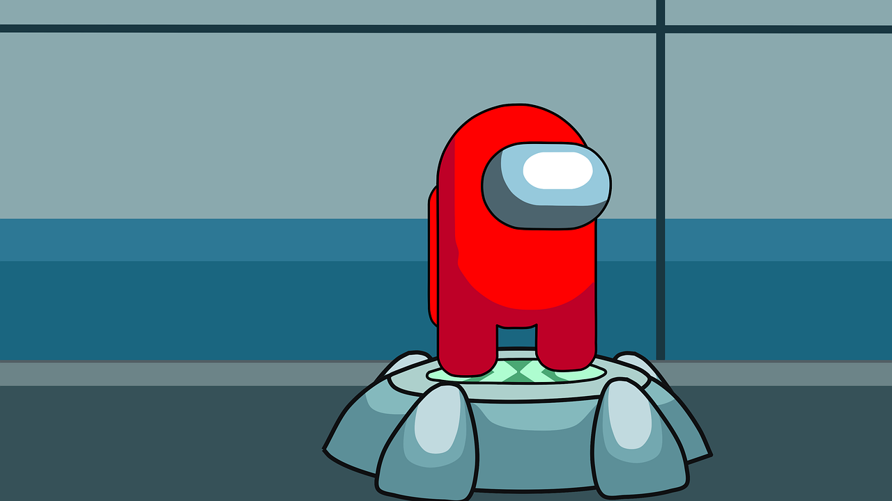

Among Us
Among Us will be played on Saturday February 3rd at 1:00 pm at a yet to be determined location. It will be the second event of the Olympics and will see everyone competing for themselves. More details to come.
Recap
The gold medal winner of Among Us was Lindsey, with Grant and Saya sharing second place silver. The competition had nine competitors, the most of any competition so far. Some issues with disconnections and a room change hampered the event, but it was still a good time. The best use of the shapeshifter goes to Grant. The worst ability to communicate also goes to Grant. Colton was imposter the most and also had the most disconnects.